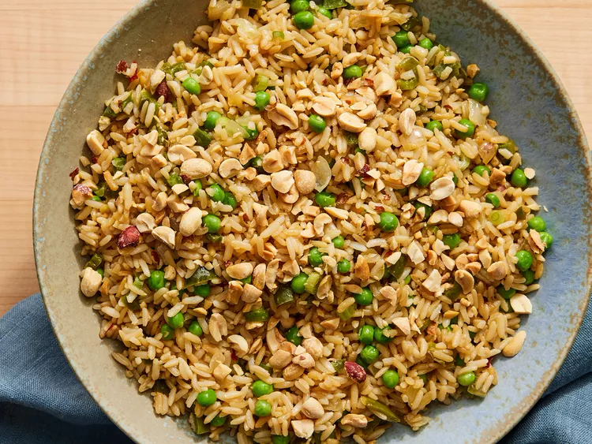

Vegetable Fried Rice
Home

Recipe by Dakota Kelly
Description
Vegetable Fried Rice combines the nutty flavor of brown rice with the fresh taste of bell peppers, baby peas and a savory soy sauce-based seasoning.
Ingredients
- 3 cups water
- 1 1/2 cups quick-cooking brown rice
- 2 tablespoons peanut oil
- 1 small yellow onion, chopped
- 1 small green bell pepper, chopped
- 1 teaspoon minced garlic
- 1/4 teaspoon red pepper flakes
- 3 green onions, thinly sliced
- 3 tablespoons soy sauce
- 1 cup frozen petite peas
- 2 teaspoons sesame oil
- 1/4 cup roasted peanuts (Optional)
Steps
- Bring water to a boil in a saucepan. Stir in rice. Reduce heat, cover and simmer until liquid is absorbed, about 20 minutes. Set aside.
- Heat peanut oil in a large skillet or wok over medium heat. Add onions, bell pepper, garlic and red pepper flakes. Cook, stirring occasionally for 3 minutes.
- Increase heat to medium-high. Stir in cooked rice, green onions, and soy sauce; cook and stir for 1 minute.
- Add peas and cook for 1 minute more.
- Remove from heat. Stir in sesame oil and garnish with peanuts.